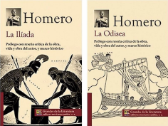

Comprendo para saber
Alumno:
Comprendo para saber
Alumno:
Influencia de la literatura griega en nuestro tiempo
La literatura es una de los aportes del mundo clásico que aún perviven con mayor vigor en nuestros días. De hecho, puede decirse que la literatura, tal y como la entendemos hoy, es un invento genuinamente griego y latino. Darle a la palabra escrita un valor estético es algo que ya había ocurrido antes, pero no con la intensidad e importancia que adquirió en la Antigüedad griega clásica.
Las literaturas occidentales son hijas y deudoras de la literatura griega. Así, Homero, Platón, Sófocles, Píndaro, Tucídides, Aristóteles y muchos más sentaron las bases de la épica, el teatro, la lírica, la historia o la filosofía, respectivamente.
Aportes de los griegos en la literatura occidental
La épica
Las dos grandes obras de la épica griega, la Ilíada y la Odisea, han ejercido una notable influencia en la literatura. El romano Virgilio escribió la Eneida, que sigue en parte el esquema de la Ilíada y en parte el de la Odisea. El relato épico de la Odisea ha continuado vivo en las culturas de todos los tiempos.
La lírica
La lírica griega fue recogida por el romano Horacio, quien consiguió aclimatar los temas y metros griegos en Roma. Posteriormente, se puede encontrar la huella de Píndaro, uno de los grandes líricos griegos, en poetas europeos.
El teatro
En la actualidad, conservamos una mínima parte del teatro griego, hecho que es extensible a toda la literatura griega. Entre los trágicos, el más imitado en Roma fue Eurípides, luego, Esquilo y casi nunca Sófocles. En la comedia, los romanos imitaron especialmente a Menandro. A través del teatro latino, junto con las traducciones directas de sus obras que se empezaron a hacer en el Renacimiento, el teatro griego pasó a Occidente: Racine, Molière, Shakespeare, Milton y Lope de Vega siguieron sus pasos. Su influjo ha seguido hasta nuestros días.
Aportes de Grecia en la gramática
La gramática tuvo un gran avance debido a los aportes de múltiples expositores griegos. La gramática de Dionisio de Tracia, un gramático griego que vivió entre el 170 a. C. y el 90 a. C., fue el primer cuerpo de doctrina gramatical que se conoce en el mundo occidental.
• Distinguieron cuatro tipos principales de oración:
• Afirmativa
• Interrogativa
• Imperativa
• De súplica
• Establecieron las ocho partes de la oración, que se hicieron clásicas:
• Artículo
• Nombre (incluye el sustantivo y el adjetivo)
• Pronombre
• Verbo
• Participio
• Adverbio (incluye también las interjecciones)
• Preposición
• Conjunción
La obra de Homero, autor representativo de la Grecia clásica
Homero (siglo VIII a. C.). Poeta griego al que se atribuye la autoría de la Ilíada y la Odisea, los dos grandes poemas épicos de la antigua Grecia. Fue admirado, imitado y citado por todos los poetas, filósofos y artistas griegos que le siguieron.
Son varias las biografías que han llegado hasta nosotros sobre Homero: en una de ellas, se cuenta que una enfermedad lo dejó ciego y, desde entonces, pasó a llamarse Homero, como lo conocemos en la actualidad. El nombre podría derivarse de la expresión ho me horón, que significa "el que no ve".
La Ilíada y la Odisea

Estos dos poemas épicos poseen un vigor lírico y narrativo que permanece fresco desde hace miles de años. Homero y sus obras han alcanzado la gloria y alimentado mitos, narraciones y leyendas a través de los siglos sin que hayan perdido su fuerza original. La mayor parte de la literatura griega se nutrió del inmenso caudal de leyendas y tradiciones que desde tiempos remotos se transmitía oralmente de generación en generación. También la poesía épica se transmitía oralmente en sus orígenes: un aedo o un rapsoda la cantaba o recitaba de memoria ante un público que desconocía la escritura. Los aedos eran músicos ambulantes que cantaban poemas épicos acompañándose con instrumentos de cuerda; los rapsodas recitaban sin cantar,
llevando el ritmo con los golpes de un bastón.
La calidad de la Ilíada y la Odisea, consideradas obras maestras de la literatura occidental, se explica por la existencia de toda una tradición previa sobre la guerra de Troya que aedos y rapsodas fueron elaborando y refinando durante siglos y que culmina en los poemas homéricos. Si bien Homero se sirve de los procedimientos de la tradición oral, en ambos poemas hay un propósito poético, un plan y estructura que revela la actividad de un poeta consciente de su arte.
 Aplico para aprender
Aplico para aprender
1.Lee el siguiente fragmento de la Ilíada; luego, responde las preguntas.
1. Canta, oh diosa, la cólera del Pélida Aquiles; cólera funesta que causó infinitos males los aqueos y precipitó al Hades muchas almas valerosas de héroes, a quienes hizo presa de perros y pasto de aves —cumplíase la voluntad de Zeus— desde que se separaron disputando el Atrida, rey de hombres, y el divino Aquiles.
8. ¿Cuál de los dioses promovió entre ellos la contienda para que pelearan? El hijo de Leto y de Zeus. Airado y enojado con el rey Agamenón, suscitó en el ejército maligna peste, y los hombres perecían por el ultraje que el Atrida infiriera al sacerdote Crises. Este, deseando redimir a su hija, se había presentado en las veleras naves aqueas con un inmenso rescate y las ínfulas de Apolo, el que hiere de lejos, que pendían de áureo cetro, en la mano; y a todos los aqueos, y particularmente a los dos Atridas, caudillos de pueblos, así les suplicaba:
17. —¡Atridas y demás aqueos de hermosas grebas! ¡Los dioses, que poseen olímpicos palacios, os permitan destruir la ciudad de Príamo y regresar
felizmente a la patria! Poned en libertad a mi hija y recibid el rescate, venerando al hijo de Zeus, a Apolo, el que hiere de lejos.
22. Todos los aqueos aprobaron a voces que se respetara al sacerdote y se admitiera el espléndido rescate; mas el Atrida Agamenón, a quien no plugo el acuerdo, le despidió de mal modo y con altaneras voces.
26. —No dé yo contigo, anciano, cerca de las cóncavas naves, ya porque ahora demores tu partida, ya porque vuelvas luego, pues quizás no te valgan el cetro y las ínfulas del dios. A aquella no la soltaré; antes le sobrevendrá la vejez en mi casa, en Argos, lejos de su patria, trabajando en el telar y aderezando mi lecho. Pero vete; no me irrites, para que puedas irte más sano y salvo.
33 Así dijo. El anciano sintió temor y obedeció el mandato. Fuese en silencio por la orilla del estruendoso mar; y, mientras se alejaba, dirigía muchos ruegos al soberano Apolo, a quien parió Leto, la de hermosa cabellera